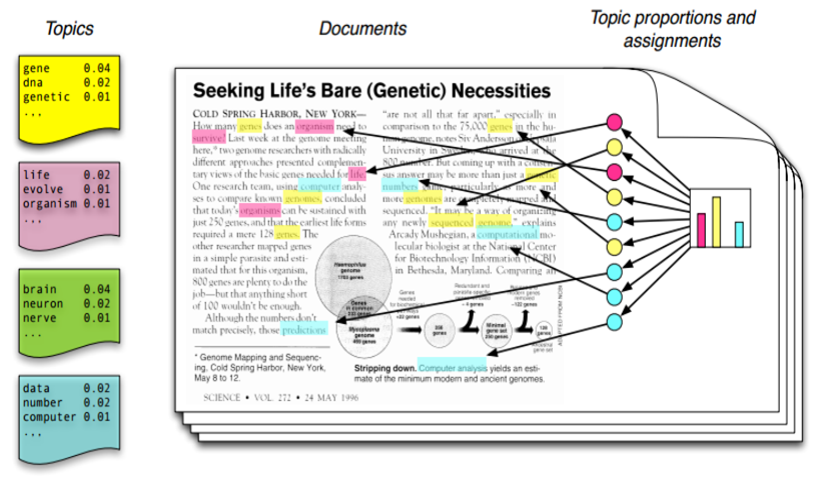
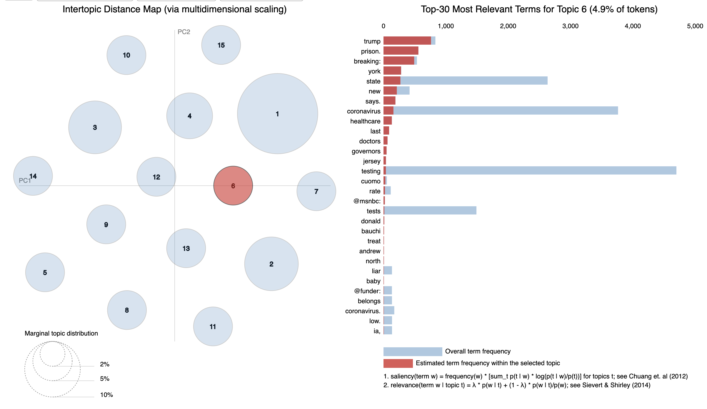

Working on CIM Coronavirus Twitter Data through Topic Modelling
by Cagatay Turkay, June 2020
This is an exploration on the use of topic modelling as a potential methodology for the interpretative analysis of Twitter data.
On Topic Modelling
Topic modelling is a type of data mining algorithm. It falls under the category known as "unsupervised" learning algorithms, which means that it is an algorithm that aims to identify and surface different latent structures that exist inherently in the data. (Some of you might know "clustering" algorithms which are also of this unsupervised kind that try to extract inherent clusters). The original topic modelling algorithm has been developed by David Blei (Blei, D.M., 2012.) and his webpage is a good first resource to start reading about the technique: http://www.cs.columbia.edu/~blei/topicmodeling.html
There are several good tutorials and explanations of topic modelling online, so here is a good first description (van Kessel, P., 2020):
A topic model is a type of algorithm that scans a set of documents (known in the NLP field as a corpus), examines how words and phrases co-occur in them, and automatically “learns” groups or clusters of words that best characterize those documents. These sets of words often appear to represent a coherent theme or topic.".
And as Brett puts it (Brett, M. R., 2012) on this online resource:
Topic modeling is a form of text mining, a way of identifying patterns in a corpus. You take your corpus and run it through a tool which groups words across the corpus into ‘topics’. Miriam Posner has described topic modeling as “a method for finding and tracing clusters of words (called “topics” in shorthand) in large bodies of texts.”
What, then, is a topic? One definition offered on Twitter during a conference on topic modeling described a topic as “a recurring pattern of co-occurring words.” A topic modeling tool looks through a corpus for these clusters of words and groups them together by a process of similarity (more on that later). In a good topic model, the words in topic make sense, for example “navy, ship, captain” and “tobacco, farm, crops.”
The resulting topic model
The resulting topic model from the topic modelling algorithms is a probabilistic mapping between the documents, the topics and the words that comprise the topics themselves.
Simply, each resulting topic is a collection of words. The underlying assumption is that these words are semantically related under a common topic/theme. For each word that is part of a topic, there is a probability to indicate how important/central/prominent a word is for the topic that it is part of.
In addition to the topics and their words, the model also provides a mapping between the topics themselves and the documents that went into the corpus. The idea behind this is to enable the model user to infer what "topics" are discussed in a document without reading through the whole document.
Here is a Illustration from Blei, D. 2012. “Probabilistic Topic Models.”:

One important note here is that the algorithm does not associate any coherent meaning to the topics, it is the role of the interpreter to look through the words and speculate on what the theme might be about. In that sense, it is best to use topic models as starting points for an interpretative discussions, and treat them as prompts to spark some initial ideas in your discourse with the data.
Another vey important note is to treat the topic models always cautiously. These models are sensitive to their parameters, how data is processed, and the nature of the text. The resulting models could easily change depending on these conditions, so it is very important to never forget the level of inherent uncertainty in these algorithmic results.
An example:
Here is a sample screenshot from the topic modelling of a part of the Twitter data that we use in the workshop where we select a topic (the red point on the left indicates a topic, topic-6) in the visualisation interface where the bars on the right indicate the words that are most relevant for the selected topic:

Analysing the Coronavirus Testing Dataset
Within this pre-analysis for this workshop, we used a Python based code to analyse the data and build a topic model. The code for the analysis is available on this open repository: https://github.com/cagatayTurkay/cimCoronatestingAnalysis . We use a topic modelling algorithm called LDA to produce the topic model itself and then make use of a visualisation library called pyLDAVis to generate some interactive visualisations.
In order to generate a useful set of topics to provide a rich set of starting points, we have created a number of topic models on a number of subset variations and ran topic modelling on them. The resulting topic models are on the Google Drive folder and also some of these are on the GitHub webpage:
https://cagatayturkay.github.io/cimCoronatestingAnalysis/demo/
Temporal Variation Topic Models: https://cagatayturkay.github.io/cimCoronatestingAnalysis/demo/temporalTopicModels.html
Variations
Whole Dataset
- Startdate: 2020-03-23
- Enddate: 2020-05-27
- Number of tweets: 132.412
- Number of distinct users: 103.888
Query Term Variations
Full Query: Subset of CoronaVirusTestingSubset. Subset contains results from query" friend "," family "," partner "," girlfriend "," boyfriend "," husband "," wife "," dad "," mum "," mother "," father "," grandma "," granny "," grandmother "," grandpa "," granddad "," grandfather "," neighbour "," body ", " community "," nation "," state "," relations "," divide "," society "
Query-1: family OR granddad OR grandfather OR grandma OR grandmother OR grandpa OR granny OR mother OR mum
- Number of tweets: 21.960
- Number of distinct users: 19.852
Query-2: boyfriend OR girlfriend OR husband OR wife OR partner
- Number of tweets: 10.868
- Number of distinct users: 10.240
Query-3: society OR state OR community OR nation OR divide
- Number of tweets: 94.434
- Number of distinct users: 77.045
Temporal variations
23.03.2020 - 23.04.2020

27.04.2020 - 27.05.2020

References
van Kessel, P., 2020. An Intro To Topic Models For Text Analysis. [online] Medium. Available at: https://medium.com/pew-research-center-decoded/an-intro-to-topic-models-for-text-analysis-de5aa3e72bdb [Accessed 22 June 2020].
Blei, D.M., 2012. Probabilistic topic models. Communications of the ACM.
Brett, M. R., 2012, Topic Modeling: A Basic Introduction Journal of Digital Humanities’, Journal of Digital Humanities, 2(1). Available at: http://journalofdigitalhumanities.org/2-1/topic-modeling-a-basic-introduction-by-megan-r-brett/ (Accessed: 22 June 2020).